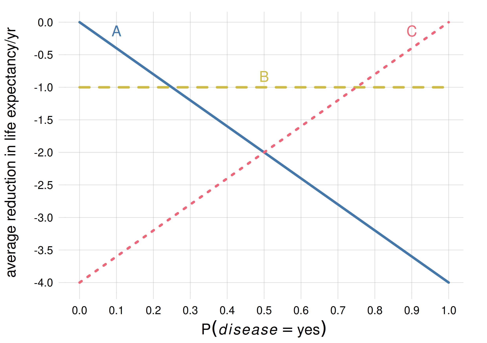
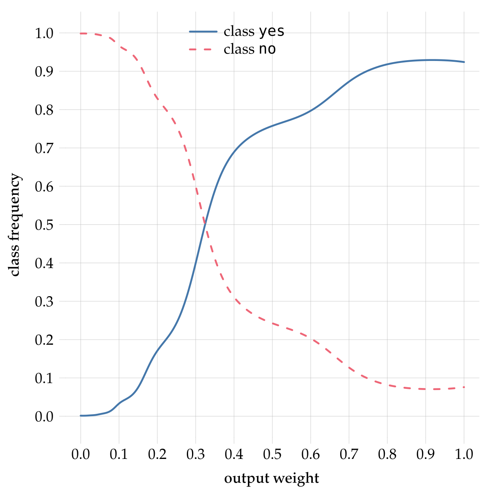
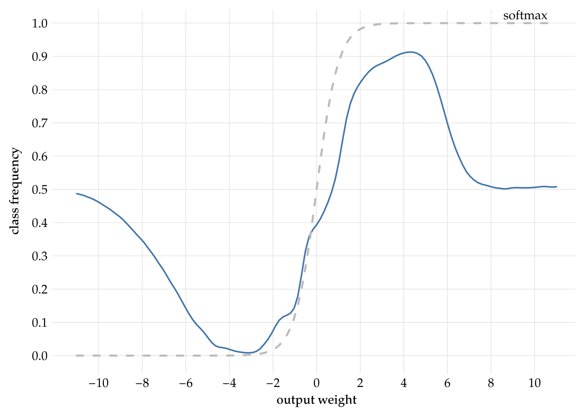

39 Decisions: limitations of present-day machine-learning algorithms
\(\DeclarePairedDelimiter{\set}{\{}{\}}\)
39.1 The omnipresence of decision-making in data science and machine learning
Many machine-learning textbooks say that
in supervised learning the algorithm learns a functional relationship between some kind of input and some kind of output
Such statement is misleading, because it suggests that there is a functional relationship from input to output, or from predictor to predictand – a functional relationship that’s only waiting to be discovered and “learned”. But as we discussed in chapter 24, in many important tasks and applications this is actually not true: there isn’t any functional relationship between input and output at all.1 Even if any possible “noise” were removed, there would still not be any functional relationship between the denoised predictor and predictand (here is an example from image classification).
{kind=link}
1 This is one more reason why we use the more general terms “predictor” & “predictand”, rather that “input” & “output”.
In many important tasks there’s only a statistical relationship between predictands and predictors. “Statistical” means that whenever a predictor has value \(\color[RGB]{34,136,51}X\mathclose{}\mathord{\nonscript\mkern 0mu\textrm{\small=}\nonscript\mkern 0mu}\mathopen{}x\), the predictand value may turn out to be \(\color[RGB]{34,136,51}Y\mathclose{}\mathord{\nonscript\mkern 0mu\textrm{\small=}\nonscript\mkern 0mu}\mathopen{}y'\) in some units, but also \(\color[RGB]{34,136,51}Y\mathclose{}\mathord{\nonscript\mkern 0mu\textrm{\small=}\nonscript\mkern 0mu}\mathopen{}y''\) in some other units, and so on. As a simple example, consider the Norwegian population in 2022. If our predictand is \(\mathit{sex}\) and we take as predictor that a person’s \(\mathit{age}\) is between \(85\)–\(89\) years, then a proportion \(43 542/(43 542 + 28 220) \approx 61\%\) of those persons have \(\mathit{sex}\mathclose{}\mathord{\nonscript\mkern 0mu\textrm{\small=}\nonscript\mkern 0mu}\mathopen{}{\small\verb;female;}\), and the remaining \(39\%\) proportion has \(\mathit{sex}\mathclose{}\mathord{\nonscript\mkern 0mu\textrm{\small=}\nonscript\mkern 0mu}\mathopen{}{\small\verb;male;}\). This doesn’t mean that, say, \({\small\verb;female;}\) is the “true” output, and \({\small\verb;male;}\) is just the effect of noise, or vice versa. That would be nonsense.
Even in tasks where there actually is a functional relation from predictors to predictands, the agent typically doesn’t know what is the function’s output for particular predictor values, because no such values have been observed in the training data. It must interpolate or extrapolate what it has learned. Also in this case there are several possibilities to choose from.
A decision-making step also appears in tasks where the agent must generate a new unit. Obviously there are many candidates for generation, which agree with what was observed in the training data. If the agent generates one unit, then it must internally have chosen among the possible candidates.
39.2 Where are the probabilities and the utilities? How are they calculated?
The remarks above have a very important consequence. If a machine-learning algorithm outputs just one predictand value (or generates one unit), among the possible ones that are consistent with the predictor, then it means that the algorithm is internally choosing one of the possibilities.
Such a choice is obviously a decision-making problem. We know that the optimal, logically consistent choice must be determined by Decision Theory, and its determination requires:
Some kind of background knowledge
the probabilities of the possible predictand values
a list of possible decisions
the utilities of the decisions, depending on the predictand’s true value
The algorithm internally must – at least approximately – be calculating probabilities and maximizing expected utilities. In principle its internal workings should be susceptible to an explanation or interpretation from this point of view.
For some, or maybe many, machine-learning algorithms such an interpretation is not readily available, and is or can be a very interesting area of research, leading to improvements or to completely new algorithms.
Available interpretations of machine-learning algorithms are mostly from the point of view of Probability Theory; unfortunately very little from the point of view of Decision Theory. For this reason we now discuss some limitations of present-day algorithms from the decision-theoretic viewpoint.
39.3 Limitations of machine-learning classifiers (and estimators)
Unknowns vs decisions
Decision Theory makes a distinction between what is unknown to an agent (“outcomes”), and what the agent has to choose (“decisions”). This distinction is common in everyday problems. We may wonder whether it will rain in the next hour. The point of our wonder, however, is not (except in some situations) the rain phenomenon per se, but its implications about what clothes or shoes we should wear, or about staying indoors or going out, or about going on foot or by car, and so on.
An important reason for this distinction is that the set of possible decisions often does not have a correspondence with the set of unknown possibilities. In fact, the two sets often have different numbers of elements. You can think of many situations in which you are unsure whether some event will happen or not, and you have three plans: one if you are almost sure the event will happen, one if you are almost sure the event will not happen, and a third “safe” plan if you are about 50%/50% uncertain. The “safe” plan typically has consequences that are neither too bad or too good, so that losses and gains are kept to a minimum. This example also shows why the probabilities of the outcomes are important.
Many present-day machine-learning algorithms are quite limited in this respect:
- their output is typically one of the unknown values, not one of the decisions
- they don’t give the probabilities of the unknown values
This limitation may not be important in some tasks, for instance when you are classifying some images as “cat” or “dog” for the purpose of a photo album. But it is extremely important and impairing in serious applications, such as clinical ones. Let’s illustrate this with a simple example.
A typical decision-making problem in medicine
A clinician may be uncertain about the presence or absence of some medical condition, let’s say a disease. This uncertainty cannot be fully removed. The clinician’s task is not simply to guess about the disease, but to choose among different available treatments. Imagine you may have broken a bone, and the clinician simply tells you: “I guess it’s broken, though I’m not fully sure. Goodbye!”.
Two crucial points about treatment choice are these:
- there may be more than two possible treatments, even if the uncertainty is binary (disease present vs absent)
- which treatment is optimal depends on the probability that the disease is present, not on a simple “yes/no guess”
Neglecting both points can lead to disastrous consequences.
For example, suppose the clinician has three treatments available: \({\color[RGB]{204,187,68}A}\), \({\color[RGB]{204,187,68}B}\), \({\color[RGB]{204,187,68}C}\). They have different efficacies against the disease, if it is present; and different damaging side-effects for the patient, if the disease is not present. Suppose that efficacy and damage can be measured together as decrease in life expectancy for the patient. The effects are as follows:
| \(\mathit{\color[RGB]{238,102,119}disease}\) | |||
| \({\color[RGB]{238,102,119}{\small\verb;yes;}}\) | \({\color[RGB]{238,102,119}{\small\verb;no;}}\) | ||
| treatment | \({\color[RGB]{204,187,68}A}\) | \(\color[RGB]{204,187,68}-4\,\mathrm{yr}\) | \(\color[RGB]{204,187,68}0\,\mathrm{yr}\) |
| \({\color[RGB]{204,187,68}B}\) | \(\color[RGB]{204,187,68}-1\,\mathrm{yr}\) | \(\color[RGB]{204,187,68}-1\,\mathrm{yr}\) | |
| \({\color[RGB]{204,187,68}C}\) | \(\color[RGB]{204,187,68}0\,\mathrm{yr}\) | \(\color[RGB]{204,187,68}-4\,\mathrm{yr}\) | |
treatment \({\color[RGB]{204,187,68}A}\) is mild (it could actually be a no-treatment option): under it, the patient is expected to live four years shorter if the disease is present, but the life expectancy is unaltered if the disease is not present
treatment \({\color[RGB]{204,187,68}B}\) is intermediate: under it, the patient is expected to live only one year shorter if the disease is present, but also if the disease is not present, owing to the damage caused by this treatment
treatment \({\color[RGB]{204,187,68}C}\) is intensive: under it, the patient is expected not to lose extra years if the disease is present, but will lose four years if the disease is not present, owing to the heavy damage caused by this treatment.
Which of the treatments above should the clinician choose? We now know how the clinician should make the optimal decision, but let’s explore the possible consequences of not making it, in three different scenarios. In each scenario, the clinician has prescribed several clinical tests (the predictors) for the patient, and obtained their results.
Scenario 1: 10%/90%
Given the results of the clinical tests, the clinician knows that the patient is typical of a subpopulation of patients where 10% have the disease, and 90% don’t. The present patient could be one among the 10%, or one of among the 90%.
If the clinician always chooses treatment \({\color[RGB]{204,187,68}A}\) for this subpopulation, including the present patient, then these patients’ lives will be shortened in total by
\[ {\color[RGB]{204,187,68}-4\,\mathrm{yr}}\cdot{\color[RGB]{34,136,51}10} + {\color[RGB]{204,187,68}0\,\mathrm{yr}}\cdot{\color[RGB]{34,136,51}90} = \boldsymbol{-40\,\mathrm{yr}} \]
If the clinician always chooses treatment \({\color[RGB]{204,187,68}B}\) for this subpopulation, including the present patient, then these patients’ lives will be shortened in total by
\[ {\color[RGB]{204,187,68}-1\,\mathrm{yr}}\cdot{\color[RGB]{34,136,51}10} + {\color[RGB]{204,187,68}-1\,\mathrm{yr}}\cdot{\color[RGB]{34,136,51}90} = \boldsymbol{-100\,\mathrm{yr}} \]
If the clinician always chooses treatment \({\color[RGB]{204,187,68}C}\), then the lives will be shortened in total by
\[ {\color[RGB]{204,187,68}0\,\mathrm{yr}}\cdot{\color[RGB]{34,136,51}10} + {\color[RGB]{204,187,68}-4\,\mathrm{yr}}\cdot{\color[RGB]{34,136,51}90} = \boldsymbol{-360\,\mathrm{yr}} \]
Clearly the best decision is treatment \({\color[RGB]{204,187,68}A}\). It is possible that, unfortunately, the present patient’s life will be shortened; but this treatment was the patient’s and clinician’s best bet.
In this scenario, a clinician that doesn’t choose the optimal treatment is on average taking away from each patient between 7 months and 3 years of life more than was necessary or unavoidable.
Scenario 2: 50%/50%
Given the results of the clinical tests, the clinician knows that the patient is typical of a subpopulation of patients where 50% have the disease, and 50% don’t. In this case the present patient could be one of the first 50%, or one of the other 50%.
Calculations similar to those of scenario 1 leads to these results:
Treatment \({\color[RGB]{204,187,68}A}\)
\[ {\color[RGB]{204,187,68}-4\,\mathrm{yr}}\cdot{\color[RGB]{34,136,51}50} + {\color[RGB]{204,187,68}0\,\mathrm{yr}}\cdot{\color[RGB]{34,136,51}50} = \boldsymbol{-200\,\mathrm{yr}} \]
Treatment \({\color[RGB]{204,187,68}B}\):
\[ {\color[RGB]{204,187,68}-1\,\mathrm{yr}}\cdot{\color[RGB]{34,136,51}50} + {\color[RGB]{204,187,68}-1\,\mathrm{yr}}\cdot{\color[RGB]{34,136,51}50} = \boldsymbol{-100\,\mathrm{yr}} \]
Treatment \({\color[RGB]{204,187,68}C}\):
\[ {\color[RGB]{204,187,68}0\,\mathrm{yr}}\cdot{\color[RGB]{34,136,51}50} + {\color[RGB]{204,187,68}-4\,\mathrm{yr}}\cdot{\color[RGB]{34,136,51}50} = \boldsymbol{-200\,\mathrm{yr}} \]
The best decision is treatment \({\color[RGB]{204,187,68}B}\).
In this scenario, a clinician who chooses treatments \({\color[RGB]{204,187,68}A}\) or \({\color[RGB]{204,187,68}C}\) for patients having the same predictors as the present patient is on average taking away one extra year of life from each patient.
Scenario 3: 90%/10%
In this scenario 90% of patients in the subpopulation with the observed predictors have the disease, and 10% don’t. The present patient could belong to either group.
Treatment \({\color[RGB]{204,187,68}A}\)
\[ {\color[RGB]{204,187,68}-4\,\mathrm{yr}}\cdot{\color[RGB]{34,136,51}90} + {\color[RGB]{204,187,68}0\,\mathrm{yr}}\cdot{\color[RGB]{34,136,51}10} = \boldsymbol{-360\,\mathrm{yr}} \]
Treatment \({\color[RGB]{204,187,68}B}\):
\[ {\color[RGB]{204,187,68}-1\,\mathrm{yr}}\cdot{\color[RGB]{34,136,51}90} + {\color[RGB]{204,187,68}-1\,\mathrm{yr}}\cdot{\color[RGB]{34,136,51}10} = \boldsymbol{-100\,\mathrm{yr}} \]
Treatment \({\color[RGB]{204,187,68}C}\):
\[ {\color[RGB]{204,187,68}0\,\mathrm{yr}}\cdot{\color[RGB]{34,136,51}90} + {\color[RGB]{204,187,68}-4\,\mathrm{yr}}\cdot{\color[RGB]{34,136,51}10} = \boldsymbol{-40\,\mathrm{yr}} \]
Treatment \({\color[RGB]{204,187,68}C}\) is the best decision in this scenario, for reasons complementary to those of scenario 1.
In this scenario, like in the first, a clinician that doesn’t choose the optimal treatment is on average taking away, from each patient, between 7 months and 3 years of life more than was necessary or unavoidable.
In each scenario, note that any decision strategy different from “sticking to the optimal decision” leads to suboptimal results – that is, lives shortened more than what was unavoidable. In scenario 1, for instance, a decision strategy such as “choose treatment \({\color[RGB]{204,187,68}A}\) most of the time, and treatment \({\color[RGB]{204,187,68}B}\) from time to time” leads to an additional life shortening of several months. This is clear from the following graph, which shows the average reduction in life expectancy for each treatment, depending on the percentage of patients with the disease:

Consider the vertical line corresponding to probability 0.1. Any strategy that mixes treatment \({\color[RGB]{204,187,68}A}\) with any of the other two will only reduce the life expectancy. This is true for any other probability values and their corresponding optimal treatments.
From the plot we can see that treatment \({\color[RGB]{204,187,68}A}\) is optimal if the probability that the disease is present is below \(25\%\), treatment \({\color[RGB]{204,187,68}C}\) is optimal if the probability is above \(75\%\), and treatment \({\color[RGB]{204,187,68}B}\) for intermediate probabilities.
Sub-optimality of a typical machine-learning algorithm
The clinical example above shows that there isn’t any one-to-one connection between decisions and unknowns. We cannot say, for instance, that treatment \({\color[RGB]{204,187,68}C}\) “corresponds” to the presence of the disease, because the best treatment is actually \({\color[RGB]{204,187,68}B}\), not \({\color[RGB]{204,187,68}C}\), if the probability for \(\mathit{\color[RGB]{238,102,119}disease}\mathclose{}\mathord{\nonscript\mkern 0mu\textrm{\small=}\nonscript\mkern 0mu}\mathopen{}{\color[RGB]{238,102,119}{\small\verb;yes;}}\) is above 50% but below 75%.
Now imagine that the clinician inputs the patient’s predictors into a neural network, trained to give an output about the presence or absence of the disease. The neural network outputs yes, but it’s known that the neural network can err. Which treatment should the clinician choose?
Does the output
yesmean that the probability for \(\mathit{\color[RGB]{238,102,119}disease}\mathclose{}\mathord{\nonscript\mkern 0mu\textrm{\small=}\nonscript\mkern 0mu}\mathopen{}{\color[RGB]{238,102,119}{\small\verb;yes;}}\) was above 50%? Then the clinician doesn’t know whether it’s above or below 75%, and can’t make the optimal choice between \({\color[RGB]{204,187,68}C}\) and \({\color[RGB]{204,187,68}B}\). At best the clinician can unsystematically alternate between these two treatments, but as we saw above this mixture is sub-optimal.Is the output
yesproduced with a particular probability? But what is this probability? The output could be \({\color[RGB]{238,102,119}{\small\verb;yes;}}\) even if the probability were less than 50% or 25%. Then neither in this case can the clinician make the optimal choice between all three treatments. And a mixture of all three is again sub-optimal.
Output scores or weights are not probabilities!
Some machine-learning algorithms are capable of giving continuous “scores” or “weights” between 0 and 1, instead of a simple answer such as “yes” or “no”. But unfortunately, typically such scores are not probabilities or frequencies, even if there may be some association between them and the probability or frequency.
A real-life example of this mismatch is evident in the plot below (see “for the extra curious” below for references). It shows the 0–1 output score given by a random forest in a binary-classification task on a test set, versus the actual frequency of the corresponding class:

Clearly the output score is different from the frequency; if they were the same the graphs would be straight lines with ±45° inclination.
Imagine what would happen if the clinician from our example above mistook the output score for a probability:
Output score in the range \(0\)–\(0.25\): the clinician would choose treatment \({\color[RGB]{204,187,68}A}\). Luckily the upper boundary of this score range approximately corresponds to a frequency of \(25\%\), so in this case the clinician would be choosing the optimal treatment.
Output score in the range \(0.25\)–\(0.5\): the clinician would choose treatment \({\color[RGB]{204,187,68}B}\). Luckily the upper boundary of this score range approximately corresponds to a frequency of \(75\%\) (note the mismatch), so in this case the clinician would be choosing the optimal treatment.
Output score in the range \(0.5\)–\(0.75\): the clinician would choose treatment \({\color[RGB]{204,187,68}B}\). But the corresponding frequency is approximately between \(75\%\)–\(90\%\), so the optimal treatment is actually \({\color[RGB]{204,187,68}C}\). As calculated in Scenario 3 above, the clinician would be then be shortening the patient’s life by 7 months more than was unavoidable.
Output score in the range \(0.75\)–\(1\): the clinician would choose treatment \({\color[RGB]{204,187,68}C}\). Luckily this corresponds to an approximate frequency range \(90\%\)–\(92\%\), where treatment \({\color[RGB]{204,187,68}C}\) is indeed optimal.
Note that we cannot say “the suboptimal treatment is chosen one out of four times”, because in this example we don’t know how many patients end up having a score in the \(0.5\)–\(0.75\) range. In a concrete case it could be that 90% of the patients end up in this range, which would mean that the misuse of the output score would lead to a suboptimal treatment in 90% of cases.
Another real example of the difference between weights or scores and probabilities is shown in the plot below, obtained by applying a neural network to the same binary-classification task on a test set. The x-axis shows the internal output-layer weight that the neural network assign to one class (more precisely, the diagonal where the two output-layer weights have equal values). The y-axis shows the frequency of that class. Typically a “softmax” or sigmoid function is applied to the output-layer weights, in order to obtain positive, normalized scores that are often miscalled “probabilities”. The softmax in the present case is shown as the dashed grey line.

We can observe an even worse mismatch that for the random forest. For instance, if the softmax is between \(0\)–\(0.25\), then the output-layer weight must have been less than approximately \(-0.5\), which in turn means that the actual frequency could be anywhere between \(0\%\) and \(50\%\). For a softmax between \(0.75\)–\(1\), the actual frequency could be anywhere between \(50\%\) and \(92\%\).
In both plots above, notice how the probability for each class can never be higher than around \(92\%\), yet the weights or scores go up to \(1\).